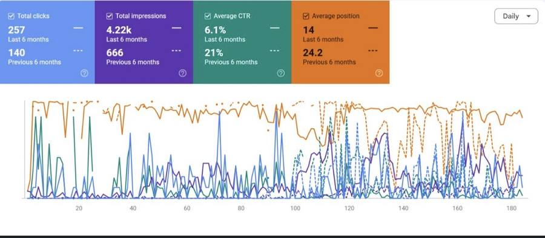
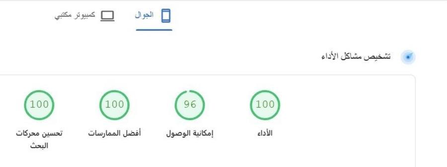

Technical SEO case study: a bilingual Arabic and English website
Google Search Console, last 6 months vs previous 6 months.
Total clicks
257
Before: 140
Total impressions
4.22K
Before: 666
Average CTR
6.1%
Before: 21%
Average position
14
Before: 24.2
Average position: lower is better.
The challenge
A bilingual React site with low visibility, tracking problems and pages stuck beyond the first results page.
What I did
- Full technical audit with Screaming Frog.
- Improved 5 existing pages in Arabic and English: meta descriptions, on-page SEO and internal linking.
- Fixed tracking issues and improved the GA4 setup.
- Raised mobile performance, now scoring 100 in PageSpeed.
CTR moved from 21% to 6.1%. Impressions grew about six times, mostly on broader queries where the site ranks lower, which dilutes CTR. Rewriting titles and meta descriptions for pages that rank well but get few clicks is the next step, along with internal links for pages close to page one.
PageSpeed Insights, mobile
- 100Performance
- 96Accessibility
- 100Best practices
- 100SEO



